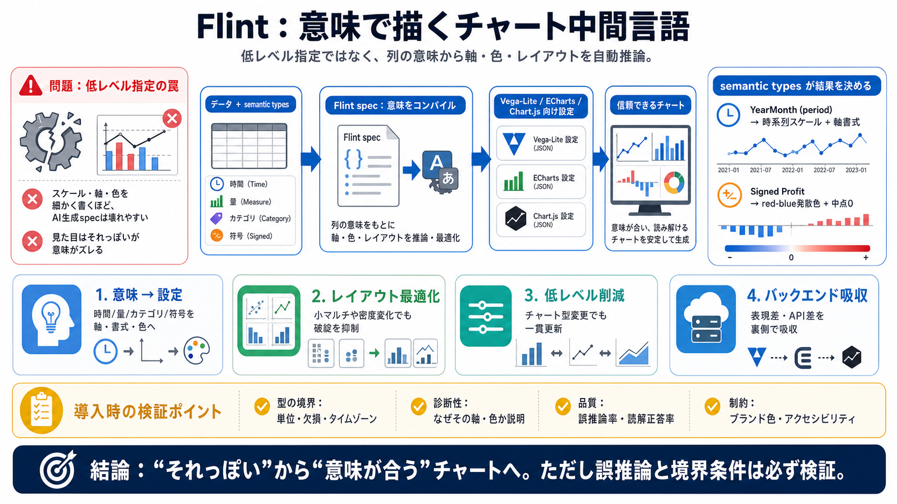

Flint: A Visualization Language for the AI Era - Microsoft Open Source
[flint-chart](https://microsoft.github.io/flint-chart#/)[About](https://microsoft.github.io/flint-chart#/)[MCP Server](h…

AI時代の“意味”で描く
人が編集しやすいコンパクトなspecを、Vega-Lite/ECharts/Chart.jsへ自動でコンパイルして、信頼できるチャート生成を目指す可視化言語です。
低レベル指定の罠
従来は、スケール・軸・レイアウト・色などを低レベルに細かく指定しがちで、AIが作るとミスが増えます。結果として「見た目はそれっぽいが、意味がズレる」危険があります。
仕様→コンパイル
Flintは「仕様(spec) → コンパイル → レンダリング」を前提に、意味（semantic types）を入力として、バックエンド向けの完全な描画設定を導出します。
“翻訳機”としてのspec
semantic types（意味型）は、列が「時間・量・カテゴリ・符号付き概念」など何を表すかを示すラベルです。Flintはこれを手がかりに、軸や色の解釈を“翻訳”します。
自動推論の核
Flintの要点は、(i) 意味→設定の推論、(ii) レイアウト最適化、(iii) 低レベル依存の削減、(iv) 複数バックエンド吸収です。
例：time と diverging
提示情報では、period（YearMonth）を時間として扱うためのパーサや、Profitの符号付き値に発散色（domainMid=0）を当てるなど、意味型が結果を決めます。
破綻しない“配置”
小マルチの数や密度が変わっても、弾性レイアウトモデルの考え方で、キャンバスに収まるようにバンド幅やサイズを調整します。
“上位互換”ではない
FlintはVega-Liteの上位互換と断定できません。むしろ最終的にVega-Lite/ECharts/Chart.jsへコンパイルする“中間言語”です。
semantic types がないと
semantic typesがないと、時間として扱うべきか、量として並べるべきか、符号付きゆえ発散色にすべきかを推論しづらくなります。すると軸・書式・色が誤り得ます。
“統一”で差を隠す
バックエンド差異は統一インターフェースで隠蔽されるとされています。例えば、Vega-Liteにネイティブがない表現はEChartsへ切り替える、という思想です。
導入で確認すべきこと
提示情報だけでは、semantic typesの体系・誤推論の評価・曖昧入力の挙動・エラー説明が不明です。導入時はガードレールと診断を前提に確認するのが安全です。
意味→自動コンパイル
Flintの主眼は、semantic typesの推論と自動コンパイルで、見栄え・一貫性・運用しやすさを底上げすることです。導入では、誤推論や欠損・単位などの境界条件を必ず検証してください。
[flint-chart](https://microsoft.github.io/flint-chart#/)[About](https://microsoft.github.io/flint-chart#/)[MCP Server](h…
You signed in with another tab or window. You switched accounts on another tab or window. * Notifications You must be s…
Agent-ready chart authoring. The MCP server gives agents Flint tools and chart guidance so they can choose a template, v…
Data visualization for streaming and static charts, maps and network visualization. A React data visualization library d…
Code ReviewReview every PR with agentsTest CoverageCoverage that climbs, suites that stay greenIncident ManagementInvest…